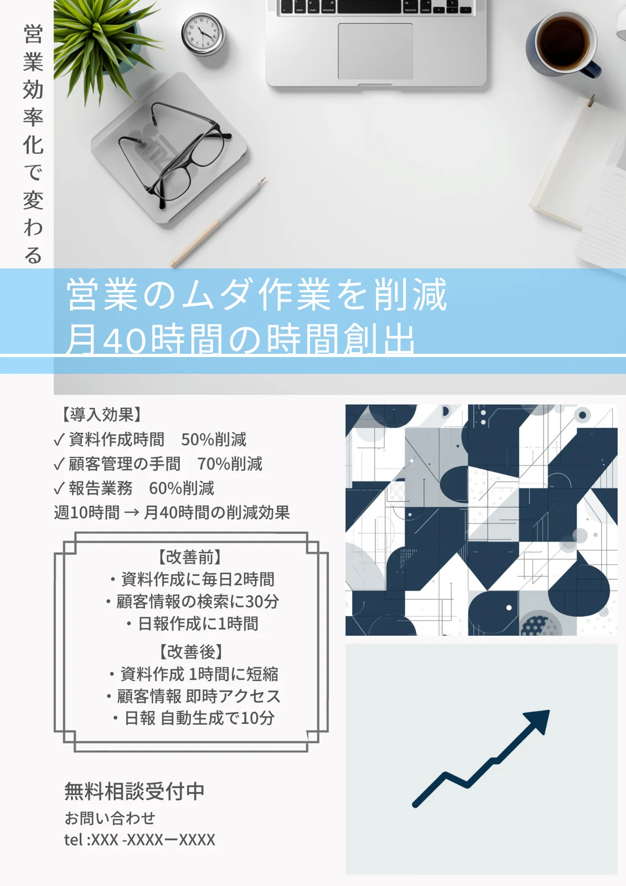

見直したい業務がわかる
報告書、メール、入力・転記など。回答に応じて、優先して改善したい作業を整理します。
LOCAL BUSINESS, NEXT STEP.
御殿場・静岡東部〜中部の事業者さまへ
その「時間がかかる」、AIと変えていきませんか。
日々の業務改善から、伝わるデザインまで。
あなたの現場に合う使い方を、一緒につくります。
AIが初めての方も、小さなご相談も。
FREE / BUSINESS AI CHECKUP
御殿場・裾野の事業者さまへ。
いつもの業務について選ぶだけで、
改善の候補と、具体的な始め方を整理できます。
報告書、メール、入力・転記など。回答に応じて、優先して改善したい作業を整理します。
作業の内容に合わせた具体的な指示文をコピー。必要な資料を用意して、AIで試せます。
用意するもの、試す手順、人が確認することまで。診断結果は印刷やPDF保存にも使えます。
選択式で回答できます。回答はサーバーに送信・保存されません。診断結果は改善の目安です。
01 / WHAT WE DO
難しいシステム導入より、身近な困りごとから。
必要な支援を、必要な分だけお届けします。
メール返信、議事録、情報整理。繰り返す作業を見直し、現場で使える仕組みに。
資料の構成づくりからSNSの投稿文まで。伝えたいことを整理し、日々の発信を支えます。
チラシ、LP、商品紹介動画。事業の魅力を引き出し、集客につながる制作をサポート。
既存の業務を整理し、優先度の高い作業から。大規模な開発を前提にしません。
AIが初めてでも大丈夫。実際のメールや資料を題材に、使い方を具体的に整理します。
日々の効率化から制作・集客まで。事業全体を見ながら、必要な支援をご提案します。
02 / SELECTED WORKS
AIとデザインを組み合わせた制作例。
画像はクリックして、動画はそのままご覧いただけます。
問い合わせまでの流れを意識した構成とデザイン。
SNSや商品紹介に使える、短尺動画の制作。

拡大する ↗告知・採用・店舗PRに。原稿整理からデザインまで。
SERVICE MOVIE
業務改善のイメージを、動画でご紹介します。
03 / PRICE
ご予算や課題に合わせて、必要な支援だけをご提案。
無理な導入や、不要なツール契約を前提にしません。
0円
ご相談後、支援内容と費用をご確認いただいてから進めます。
04 / HOW IT WORKS
課題の整理から、その後の運用までサポートします。
業務の内容、困っていること、今お使いのツールをお聞きします。
AIで改善できる作業や制作物を整理し、優先順位を決めます。
支援内容と費用、進め方をわかりやすくご案内します。
AIの設定や使い方の整理、必要な制作物づくりを進めます。
実際に使ってわかった課題を確認し、改善につなげます。
05 / FAQ
はい。専門用語を使わず、普段の業務にどう使えるかから一緒に整理します。
可能です。会社の規模にかかわらず、業務内容やご予算に合わせて支援内容をご提案します。
御殿場・静岡東部〜中部を中心に、内容によってオンライン相談にも対応しています。
はい。チラシ・動画・LPなど、必要な制作物だけでもご相談いただけます。
LET’S MAKE IT EASIER.
「こんなこと、AIでできる？」
まだ具体的でなくても、お気軽にご相談ください。